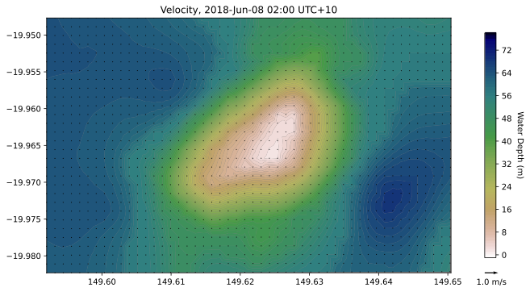
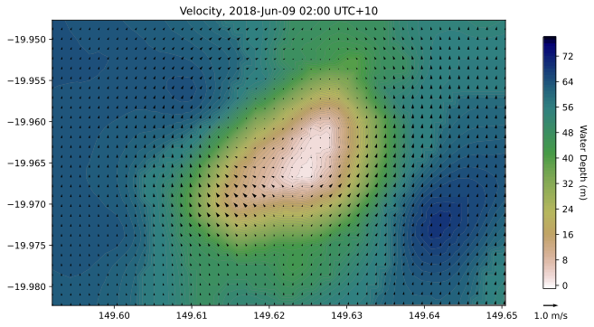
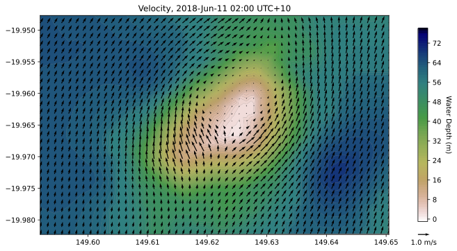

import os
import meshio
import numpy as np
import pandas as pd
from scipy import ndimage
import netCDF4
from netCDF4 import Dataset
import matplotlib.tri as triangle
import matplotlib.mlab as ml
import matplotlib.pyplot as plt
from matplotlib import cm
from mpl_toolkits.axes_grid1 import make_axes_locatable
import cmocean
import datetime as dt
from pylab import *
# display plots in SVG format
%config InlineBackend.figure_format = 'svg'
%matplotlib inline
Read the dataset
outsimple = "378/outputs/out_simple.nc"
fdata = Dataset(outsimple, "r", format="NETCDF4")
ncdata = fdata.variables
# print(fdata.variables)
print(ncdata.keys())
print()
# specific variable
print(ncdata['uav'])
dict_keys(['zc', 'longitude', 'latitude', 'botz', 'time', 'uav', 'vav', 'avg_speed', 'avg_dir', 'u', 'v', 'current_speed', 'current_dir', 'w', 'eta', 'wind_u', 'wind_v', 'wind_mag', 'wind_dir', 'patm', 'dens', 'dens_0', 'Kz', 'Vz', 'bottom_u', 'bottom_v', 'bottom_speed', 'bottom_dir', 'Cd', 'u1mean', 'u2mean', 'wmean', 'u1vmean', 'u2vmean', 'Kzmean', 'tke', 'diss', 'salt', 'temp', 'nhf', 'swr', 'lwr', 'lhf', 'shf', 'alerts_actual', 'alerts_cumulative', 'U1VH0', 'U2VH0', 'vol_cons', 'swr_bot_absorb', 'swr_attenuation', 'swr_transmission'])
<class 'netCDF4._netCDF4.Variable'>
float32 uav(time, j, i)
coordinates: time latitude longitude
units: ms-1
long_name: Eastward depth averaged current
standard_name: eastward_sea_water_velocity
vector_name: Depth average currents
vector_components: uav vav
valid_range: [-100. 100.]
missing_value: 1e+35
unlimited dimensions: time
current shape = (4, 30, 50)
filling on, default _FillValue of 9.969209968386869e+36 used
Coordinates
# Get lon,lat coordinates for nodes (depth)
lat = ncdata['latitude'][:].filled(fill_value=0.)
lon = ncdata['longitude'][:].filled(fill_value=0.)
lon.min(),lat.min(),lon.max(),lat.max()
(149.592011749, -19.982301338, 149.650463948, -19.9476798075)
Get variable:
speed = ncdata['avg_speed']
h = ncdata['botz'][:,:].filled(fill_value=0.)
nlay = ncdata['zc'].shape[0]
Get time interval:
start = dt.datetime(1900,3,2,15,0,0)
end = dt.datetime.utcnow()
# Get desired time step
time_var = ncdata['time']
stime = netCDF4.date2index(start,time_var,select='nearest')
etime = netCDF4.date2index(end,time_var,select='nearest')
dtime = netCDF4.num2date(time_var[stime],time_var.units)
daystr = dtime.strftime('%Y-%b-%d %H:%M')
print('RECOM model start time: ',daystr)
dtime = netCDF4.num2date(time_var[etime],time_var.units)
daystr = dtime.strftime('%Y-%b-%d %H:%M')
print('RECOM model end time: ',daystr,'\n')
ntime = len(time_var)
print('Number of time steps',ntime)
print('Number of vertical layers',nlay)
RECOM model start time: 2018-Jun-08 02:00
RECOM model end time: 2018-Jun-11 02:00
Number of time steps 4
Number of vertical layers 25
Triangulate RECOM mesh
meshtri = triangle.Triangulation(lon.flatten(),lat.flatten())
h.min(),h.max()
(1.6, 68.48812500000001)
tstp = 3
u = ncdata['uav'][tstp, :, :].filled(fill_value=0.)
v = ncdata['vav'][tstp, :, :].filled(fill_value=0.)
sp = np.nan_to_num(ncdata['avg_speed'][tstp, :, :].filled(fill_value=0.))
levels = np.arange(-1,h.max()+10,1)
maxvel = 1
# tricontourf plot of water depth with vectors on top
for tstep in range(0,time_var.shape[0]):
ilayer = -1
u = ncdata['uav'][tstep, :, :].filled(fill_value=0.)
v = ncdata['vav'][tstep, :, :].filled(fill_value=0.)
figure(figsize=(10,10))
subplot(111,aspect=(1.0/cos(mean(lat)*pi/180.0)))
tricontourf(meshtri, h.flatten(),levels=levels,cmap=cm.gist_earth_r) #cmocean.cm.deep) #cm.gist_earth)
gca().patch.set_facecolor('0.5')
cbar=colorbar(fraction=0.025, pad=0.075)
cbar.set_label('Water Depth (m)', rotation=-90, labelpad=15)
ax = cbar.ax
Q = plt.quiver(lon,lat,u,v,scale=30)
maxstr='%3.1f m/s' % maxvel
qk = plt.quiverkey(Q,1.1,0.,maxvel,maxstr,labelpos='S')
dtime = netCDF4.num2date(time_var[tstep],time_var.units)
daystr = dtime.strftime('%Y-%b-%d %H:%M')
title('Velocity, %s UTC+10' % (daystr));
